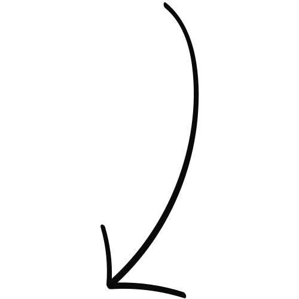
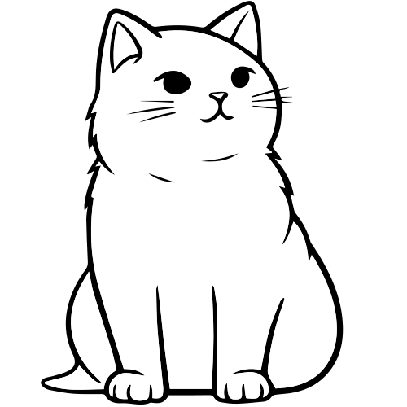

Welcome
This is where I share my love of design and code.
Git (& GitHub)
References
If you're a self-taught developer, and/or you have never worked on a team, you may have never learned Git. No worries! This reference is for you.
What is Git?
Git is a version control system (VCS). It keeps track of changes to your files and makes it easy for a team to collaborate on projects.
How to Install Git
You can download and install Git from Git's official website: git-scm.com. To confirm it was installed correctly, open your command line interface (CLI). On Windows, Command Prompt or PowerShell, and on Mac, Terminal. Type git --version and it should show the version of git that was installed.
GUI vs CLI
You can use Git with a graphical user interface (GUI) or a command line interface (CLI). There are arguments for both. It is a personal preference. I have used both. Personally, the text editor I use for coding has a built-in CLI, so if I can use that, then that's one less app for me to open.
Ash, what's a GUI and what's a CLI? The operating system on your computer is a GUI. You have a desktop and icons. Maybe they're organized. Maybe they're cluttered. No judgement! You know where everything is, and you click an icon to open a folder of photos of your cat. Take away the desktop and icons, and you're left with the CLI. On Windows, Command Prompt or PowerShell, and on Mac, Terminal. Now you type a command to open a folder of photos of your cat.
Basic CLI Commands
There are many commands, but I've only listed the basic commands that you might use with Git.
- pwd - print working directory (folder)
- ls - list directories
- cd - change directory
- mkdir - make directory
Configure Git
After you install Git and before you start using Git, you'll need to configure it. To configure it, open your CLI and type git config --global user.name "Your Username" and git config --global user.email "Your Email" replacing your name and email in the quotes. Git will use your name and email to keep track of who made file changes.
Start Using Git
After you configure Git, the first thing you'll need to do is open your CLI and navigate to the folder you want to start using Git with or create the folder if it doesn't exist yet using the basic cli commands. If you've been following along from the beginning, I mentioned that the text editor I use has a built in CLI. Besides being one less app to open, a cool thing about the built in CLI is that it's already at the current folder that I have opened, so I don't have to worry about using the basic CLI commands to navigate there. Once you're at the folder you want to use git with, type git init and the folder now magically becomes a repository or repo, which is just a fancy word for a project being watched for changes.
What is GitHub?
You can use Git on your own personal device without ever hosting it on the web, but most devs use GitHub or another hosting service for Git repos, GitHub being the most popular. The first thing to do is create a free account on GitHub.